This website is based off minecraft mods I've personally went through and completed to the best of my ability. There is only one rule in this website that you need to take note of.
Okay okay, funny little joke, but seriously though. This website is just different types of mods that I did and it is meant to help anyone willing to learn some mods or if they're stuck in any of the mods listed. More mods will be added on as I continue to complete them, and some will have more content in them.
This website will also teach you how to do some automation that I've done in modpacks with the mods, through either videos or just the text itself. It will let you know what modpack I have done it on as well. So do check out the modpacks whenever you're finished with this website. They are very fun, I can tell you that much.
List of Tech Mods
These are the Tech mods that I have personally finished/automated so far. There will be more added whenever I either complete them myself or get suggestions for mods.
Mekanism is a really good tech mod, when it comes down to energy storage options, the difficult to get armor is actually well worth getting, and just the machines in the mod are amazing, especially when trying to increase outputs of things like ores and such.
(Disclaimer this mod was done in All The Mods 8)
Starting off this mod
You're going to have to collect lots and lots of osmium. You can find them in caves underground, they're able to be broken and collected with stone or higher. This will only show the ore processing from tier 1 to tier 4 for now. There will also be a video that will show the whole process of making the tier 4 ore processing line. It is how I would make it at least.
Time to start with Tier 1 ore processing.
For Tier 1 ore processing, we need about 2 machines from this mod. The energized furnace and the enrichment chamber. You want to connect your storage with the ores to the enrichment chamber with a pipe and be sure to configure how you'd like. The enrichment chamber will turn the ore into 2 ore dust, then you can pipe it into the energized furnace to smelt the dust into ingots, then pipe the ingots into a storage container or system
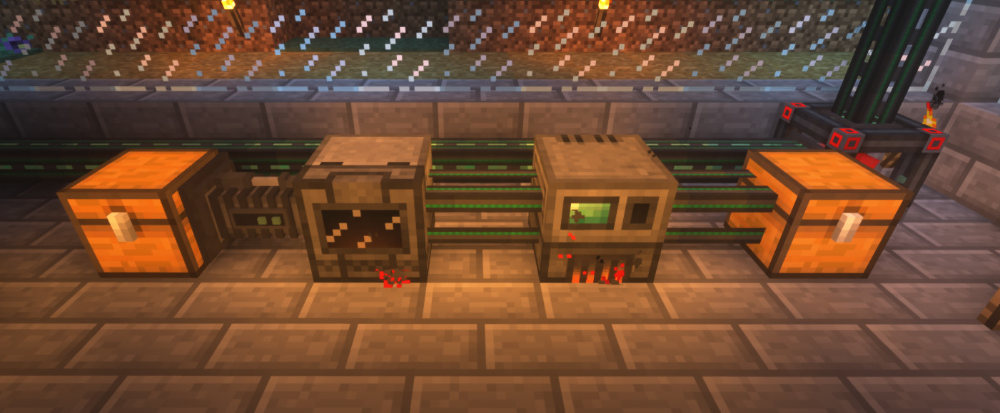
We're moving onto Tier 2 processing now.
Now for the tier 2 process, we need a few more machines to help triple our ore processing. We need a Crusher, Purification Chamber, and a Electrolytic Separator. (see recipes down below), The electrolytic separator is needed to provide oxygen to the purification chamber so the purification chamber can create clumps of the ore. To get the oxygen, you need to pipe water into the electrolytic separator so it can make the oxygen.
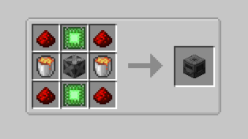
Crusher
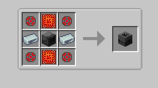
Purification Chamber
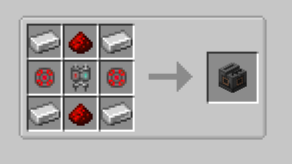
Electrolytic Separator
Once you have some oxygen, you pipe it into the purification chamber so the chamber can make ore clumps using the silk touched ore. You then pipe the clumps into a crusher to make dirty dust. Then pipe the dirty dust into an enrichment chamber to make regular ore dust, then smelt it down to the ingots using the energized furnace.
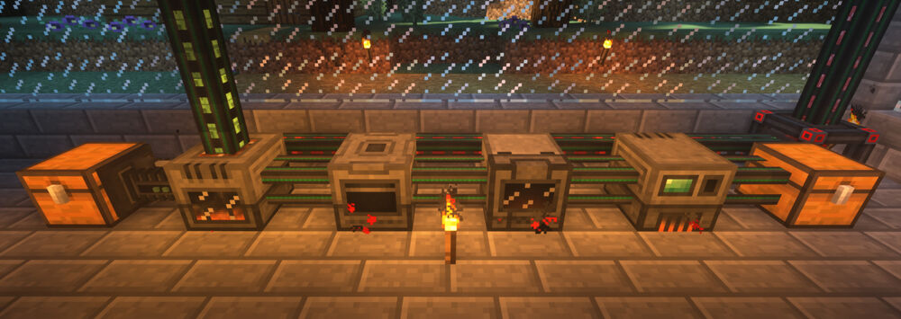
We're getting closer to the end.. Time for Tier 3.
In the tier 3 ore process, we need three more machines. We need a Chemical Injection Chamber, Chemical Infuser, and a multi-block structure called a Thermal Evaporation Plant. The recipes for all of these things are down below. The Evaporation Plant has all 3 block recipes down below.
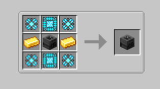
Chemical Injection Chamber
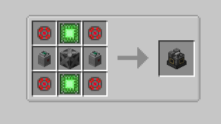
Chemical Infuser
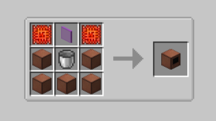
Evaporation Chamber Terminal
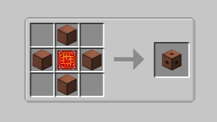
Evaporation Chamber Valve
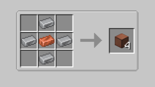
Evaporation Chamber Block
These are going to be added onto the tier 2 process. So we are going to set up the thermal evaporation plant, you need to have a 4x4 plot and fill the flooring with the evaporation chamber blocks, then tower up 2 blocks and go around the plant, leaving the 2x2 space empty. (You can make the plant as tall as you'd like, as long as it's between a height of 2-18) Then get 2 valves and place them anywhere as long as they aren't in the corners, then place the terminal in the multi-block as long as it isn't in the corners. Then there you go, you have a Thermal Evaporation Plant. You will also need a resistive heater or 4 solar panels from mekanism. Completely up to you on what you'd like to use, I would personally go for the heater since it can max out the temps inside of the plant. But for the plant, we want to input water into one side of it, then the water will turn into brine which is a liquid, then we pipe that out into either a container or directly into a Electrolytic Separator. The separator will separate the brine into chlorine and sodium, we need the chlorine, you can either dump out the excess sodium or store it somewhere else. You pipe out the chlorine using pressurized tubes then put them into the chemical infuser. Then you get the hydrogen from the other electrolytic separator by piping water into it, then using pressurized tubes to get the hydrogen into the chemical infuser. The infuser will infuse them both into hydrogen chloride and you input that into the chemical injection chamber. That is when you get started with the actual process of processing ores.
The processing loop for Tier 3.
This is basically added onto the Tier 2 process, so it should look like this. You hook up your storage with the silk touched ores into the chemical injection chamber, it will turn the ore into shards. Then you pipe the shards into a purification chamber and the chamber will turn the shards into clumps. You then put the clumps into the crusher to crush the clumps into dirty dust. Pipe the dirty dust into the enrichment chamber to make regular ore dust, then pipe that into the furnace and it will turn into ingots.
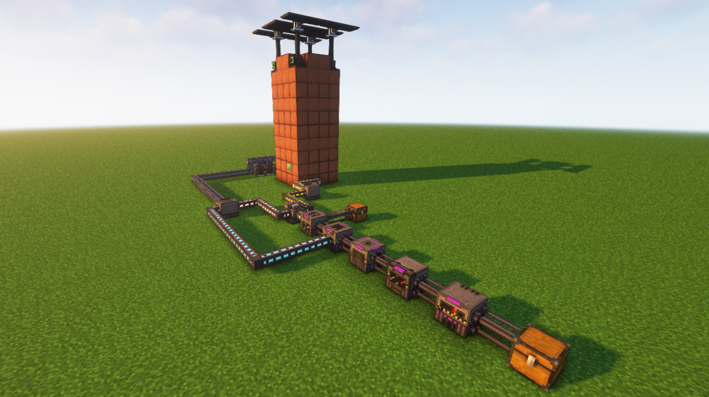
We are finally onto the Tier 4 process.
The tier 4 process takes a good bit to really explain, so I decided to make a video on the whole thing, it has no sound but it basically shows you what you can do with it and how to do it really. But aside from that, you need a few more machines, the Chemical Dissolution Chamber, Chemical Washer, Chemical Crystalizer, Rotary Condensator, and a Chemical Oxydizer. The recipes for them will be below the video, hopefully the video helps you out on how to make the tier 4 process for ores.
This is one of my favorite power generation mods, mainly because of how simple it is and it doesn't actually take too much to get started into it either. Definitely a fun mod to get into and you can get pretty good power generation from it as well.
(Disclaimer this mod was done in All The Mods 8)
Starting off this mod.
To get started in this mod, you'll need to get a decent amount of graphite and iron to be able to make most of the blocks. You'll also need uranium to make components as well and to actually power the reactor, so gather as much as possible. This mod isn't too hard to really get into, again, it is a really fun one.
What components do we need?
We need to get a few blocks, which are required in order to be able to make the reactor. We need the Reactor Terminal, 2 Access Ports, a power tap, lots of Reactor Casings, some Fuel Rods, and finally some Control Rods. The recipes are below.
Reactor Terminal
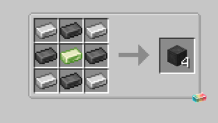
Reactor Casing
Reactor Fuel Rod
Reactor Access Port
Power Tap
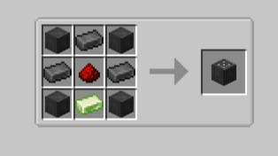
Reactor Control Rod
Getting started on a Passively Cooled Reactor
There are two different types of reactors, we are going to be doing a passively cooled reactor in this section. You need one in order to be able to create the active cooled reactor, the actively cooled one needs the waste from the passive cooled reactor. You can make the reactor as big as you'd like, it goes from a 3x3x3 size reactor, which is the smallest. Up to 128x128x192, which is the largest in the default config. We are going to be making either a 3x3x3 or 5x5x5 size passive reactor.
Below this is a 3x3x3 size passive reactor
This is a 5x5x5 size passive reactor with diamonds as the coolant
Time to actually make the reactor:
So to get started, using those pictures above, you can use those as references. You need to create the reactor using the reactor casing, then putting the reactor terminal in it to actually create the reactor. Put the fuel rods inside of the reactor, however you'd like to place them and however many you'd like. Then surround it with any type of coolant you'd want to use, the reactor multi-block will let you know if something is not compatible with the mod and it won't finish the multi-block. On the top of the reactor, you want to top off the fuel rods with control rods. Put in 2 access ports and change one of them to output instead of input (it will turn blue for output), then put a reactor power tap to be able to extract power from the reactor. Pipe uranium into the green access port since that is the input, then put another pipe taking out of the blue access port to take out the waste (cyanite) that gets created from the reactor.
Time to reprocess the waste from the reactor
You can reprocess the cyanite that you get from the passive reactor that you've made. You use a Cyanite Reprocessor to reprocess the cyanite into blutonium ingots, which is needed in order to create the Turbine Terminal. You'll need that in order to create the active cooled reactor that was mentioned earlier.
Now time to create a Turbine
Now we need to create a turbine using the cyanite and blutonium we've made, we're going to actively cool a reactor. Turbines are good for trying to keep your fuel in check, they are usually really fuel efficient and they are good at helping save some material for cooling and all.
Turbine Terminal
Turbine Casing
Turbine Glass
Turbine Fluid Port
Turbine Rotor Bearing
Turbine Power Tap
Rotor Shaft
Rotor Blade
Below is a video to setup a Turbine and make an active cooled reactor, I also decided to include the setup I have in my world for the reactor.
There are GUI's that will also look a little daunting when looking at them the first time for the turbines. For the reactor side of things, you will have a GUI that looks like the one below.
The first bar is for the uranium inside of the reactor, it can also pile up the waste as well, so be sure to clear out the waste so it doesn't fill up the reactor. The second bar is for the case heat, the third bar is for the fuel rod heat, both of these things can increase the amount of fuel is used depending on how hot it is. Then the fourth bar is where the water is being input into the reactor, then the last bar is for the steam being made and it needs to be output into a turbine so it can process the steam and turn it back into water and make power on top of that.
Now for the Turbine side of things, the GUI looks a little similar but with a few more options.
The first bar is the RPM (Rotations per Minute), it is basically the speed of the turbine blades are going. The second bar is where the steam goes, when the reactor makes the steam from the water being pumped into it, you pipe the steam into the Turbine and it'll turn it back into water. The third bar is where the water is and it gets pumped back out into the reactor to turn back into steam. The final bar is for the stored energy that is produced inside of the turbine, ready for it to be taken out.
A comparison between Passive Cooled and Active Cooled Reactors.
Passively Cooled Reactor
This build is a 5x5x5 reactor completely filled with diamond blocks. The diamond blocks are meant to be the moderators for the heat and the reactivity, but in easier terms, the more expensive the block, the better it is to use as a moderator in a passive reactor. But this specific reactor generates 19.5k RF/t. (Redstone Flux (RF) is basically a term for electricity in modded MC, and a minecraft tick (/t) is 50 miliseconds in real life), having diamonds in the reactor isn't bad at all, I would definitely use that as a start for early game power generation. You could also replace the diamonds with iron or gold if you aren't too plentiful in diamonds.
Actively Cooled Reactor
When it comes down to actively cooled reactors, you don't need to fill up the inside of the reactor completely to get good results or similar results. The moderator blocks are there to try and keep the efficiency of the reactor going, there are a lot of technical things to do for a turbine, like using the control rods to make sure it isn't overflowing anywhere, else the turbine will ramp up too quickly and then end up exploding, then boom, there goes your chests and items.
These are the Magic mods that I have personally finished/automated so far. There will be more added whenever I either complete them myself or get suggestions for mods.
This used to be called "Equivalent Exchange." But this mod is one of my favorite mods of all time, mainly because of how overpowered you can get in it. The sheer power in this mod is insane, you just need to do some exchanging. This page will show you the progress of the mod in almost full detail in my words. Hopefully this will help solve any concerns you have/may have with the mod
Start of the mod. The Philosopher Stone.
(Disclaimer, this post was done in FTB Sky Odyssey)
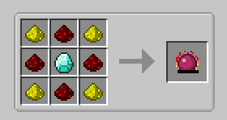
In order to really get started with this mod, you need the Philosophers Stone. It is relatively easy to get, you just need 4 glowstone, 4 redstone, and a diamond. (this recipe can change in some modpacks, but this is the normal recipe), Once you get this that is when you really get started in this mod. Also, for a much easier time (and overpowered), I would recommend installing Project Expansion. (Project EX for short), it will give some items that will make things easier, especially for one subject that will be gone over later on in this page.
Now we need some fuel..
Now that we have the philosophers stone, we need to make some fuel. You need to get 4 pieces of coal, put them into the crafting table with the philosophers stone, then boom, you have a piece of alchemical coal. So, this mod adds 3 more variants of coal that you can make with the philosophers stone. They are Alchemical coal, Mobius Fuel, and Aeternalis Fuel, aeternalis being the best variant. They are made the exact same way as you first did with the coal to make the alchemical coal. The video on the side will show you how to make each of the different fuels. Do check it out in case you didn't understand and need a visual representation.
We were already alchemists, now we're getting better.. Where's the metal?
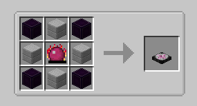
Alright, now we are going to REALLY get into Project E and its overpowered goodness. Hopefully you have a diamond pickaxe by now because we need to get some obsidian and stone. 4 of both to be exact. The recipe is on the side of this text.
Now that you have those things, you can now make your new best friend, the Transmutation Table. This thing will be with you probably the whole time since it is very very important to have for this mod.
What is the Transmutation Table?
The Transmutation Table is something that you use to be able to use your EMC, (short for Energy Matter Covalence) that is when you really get started in the mod and you could generate some EMC using the extra resources you may have if they have an EMC value below them. The table looks like the picture to the side, and you will also see an item with an EMC value below it. Whenever you put an item into the transmutation table, you will get the EMC from the item if you burn it. So if I put the diamond in there, I would end up getting 8,192 EMC out of the diamond. If I put two diamonds instead of one, I would get 16,384 EMC since they are stacked on each other. The EMC is based off however many items are in the stack.
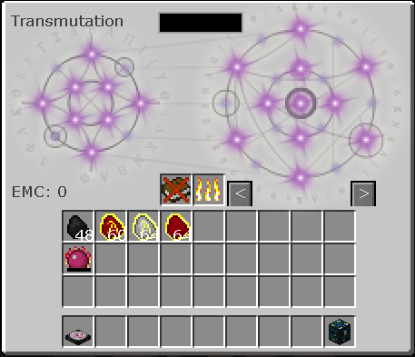
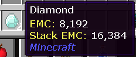
We need something that matters.
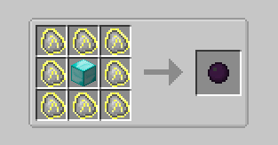
Now we need to get some dark matter and the other tiers above that, you will need a good amount of diamonds for dark matter, so hopefully you have some type of resource generation for diamonds or hope your luck is amazing. You need an entire diamond block in order to make the dark matter. You use 8 Aeternalis Fuel and a diamond block in the middle and you can get the dark matter.
Now we need to get some red matter as well, you need a whopping 3 dark matter in order to create the red matter. Then use the 3 dark matter with 6 aeternalis fuel to create the red matter. The way you create the red matter is what you do with all the next tiers after red matter if you have the Project Expansion mod installed as well. So using the red matter instead of the dark matter, using the same type of recipe, you just replace the dark matter with the red matter and you will end up making magenta matter, and so on. Use the next tiers you make to make the other tiers until you get to fading matter. (this is all in Project EX by the way)
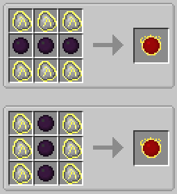
We will need some other things as well.
We will need to grab an Energy Condenser MK2, since that will be fairly important for the next section. We will also need the prerequisites for the MK2, like the Energy Condenser MK1, and an Alchemical Chest. For the alchemical chest, we need some covalence dust, they are fairly easy to make, there are 3 different types of covalence dust, Low, Medium, and High. For the low covalence dust, you need 8 cobblestone and a piece of charcoal in the bottom right corner. For the medium, you just need redstone and an iron ingot. For high, you need a diamond and a piece of coal. Now for the alchemical chest, we need 2 stone, 2 iron ingots, a chest, and each of the covalence dusts. Then we can move onto making the Energy Condenser MK1, you need 4 diamonds, 4 obsidian, and an alchemical chest, the obsidian in the corners, the chest in the middle and the empty spaces with diamonds. After that, you'll need to make red matter and dark matter blocks, which are pretty expensive for early game. You just need to put 4 dark/red matter inside of the 2x2 and you'll be able to make them. Watch out and try not to place them or else you won't be able to break them without the dark/red matter pickaxes. Then you make the Energy Condenser MK2, you put the red matter blocks in the corners, the Energy Condenser MK1 in the center, then put dark matter blocks in the empty spaces.
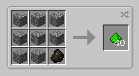
Low Covalence Dust
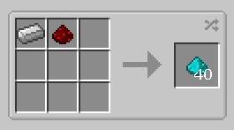
Medium Covalence Dust
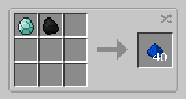
High Covalence Dust
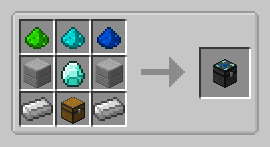
Alchemical Chest
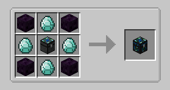
Energy Condenser MK1
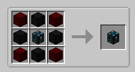
Energy Condenser MK2
Time to get into making some power flowers!
It may seem like we're skipping a whole lot of steps, but hear me out, this will help you out with your EMC generation, even though it is a little at first, over time, you will have a lot more EMC and you may end up with quintillions like me. (I always find ways to break things with this mod) But this way of making EMC is a pretty passive way of making it, you could always put in any spare diamonds you may have to feed it some EMC, or you could use the mob drops in your mob farm, but there are tiers to these in the Project EX mod, and there are a WHOLE LOT. specifically up to MK16, you can also make little bonsai pots with power flowers inside of them instead of actually making the whole power flower. But they are a little bit expensive to attempt to get early game, especially EMC wise. But to get started, we need a Basic EMC Link, a Basic Collector, and a Basic Relay. For the Basic EMC Link, we need 2 of each covalence dust, red matter in the middle, and stone on the sides of it. For the Basic Collector, you need 6 glowstone, 1 furnace, 1 glass, and one aeternalis fuel block in the middle. For the Basic Relay, you need 7 obsidian, 1 glass, and 1 aeternalis fuel block in the middle. These are what you need for creating a very simple power flower, which can be expanded and upgraded.
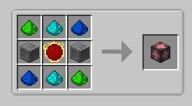
Basic EMC Link
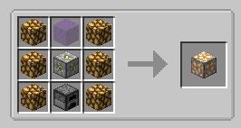
Basic Collector
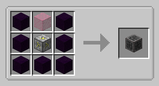
Basic Relay
Below is where you can see how you could do the collectors and relays into the EMC link, you want the collectors to go into the relay, and the relay to go into the link, that is how you'll be able to get EMC.
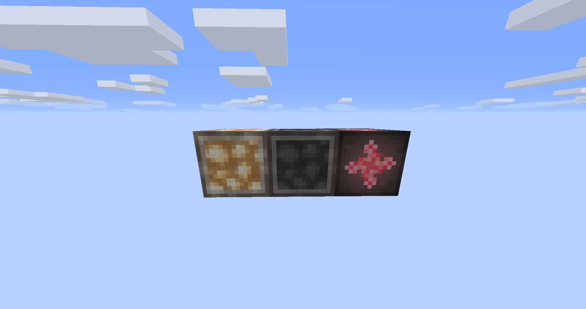
Make sure you're learning everything you've gotten so far into the Transmutation table, mainly so you can take out whatever you'd like to when you start making huge EMC income from the power flowers.
Now we need to figure out how to upgrade the collectors and relays. It is fairly simple to upgrade them, you just need to put whatever matter you're trying to use to upgrade to the previous tier of collector/relay. So you need to get a dark matter in the crafting table for the basic relay and collector to make the MK2 (Dark Matter Relay/Collector), and then use the red matter to upgrade the MK2 to MK3, and so on and so forth, you cannot upgrade straight to a specific one, so you can't upgrade from MK1 to MK4 for example, you need to get everything in the previous tiers before you get to MK4.
An actual Power Flower.
Below is a video on how to physically make a power flower, it is fairly easy to do, the Project Expansion mod has smaller versions of these power flowers and all the different tiers as well up to MK16.
Smaller Power Flowers
There are smaller versions of these power flowers and are more server friendly, so if you're playing on a server with friends, these little bonsai pots are fully built power flowers but smaller and it is all one ticking block instead of being multiple ticking blocks.
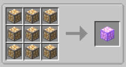
Compressed Collector
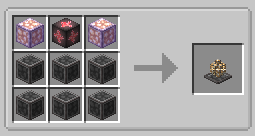
Bonsai Power Flower
Each upgrade you go through for the bonsai power flowers, you use the upgrade that you're on and use the exact same type of recipes, so instead of the basic MK1 collectors to make the compressed one, you could use MK10 collectors to make a MK10 compressed collector. Then use the six MK10 relays and two MK10 compressed collectors with a basic EMC link to make the MK10 bonsai power flower.